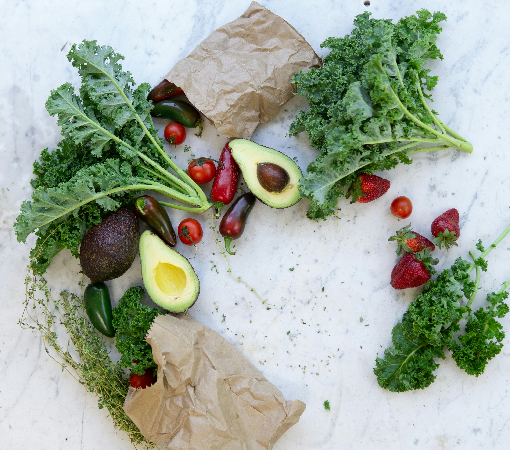

Your body is like a finely tuned machine—give it the right fuel, and it will perform at its best! Diet isn't about restriction; it's about nourishing yourself with foods that make you feel good and give you energy to take on the world. Think of food as your body's way of saying “thank you” for taking care of it.
Every bite you take is an opportunity to empower your body and mind. So, whether you're looking to slim down, bulk up, or just feel better, the right diet will get you there without sacrificing taste or joy. Let's find out what works best for you!
Explore the best foods that support your health goals:
Remember, a good diet isn't just about what you eat—it's about how you feel. The right foods give you energy, clarity, and confidence to tackle anything life throws your way. Fuel your body with love, and it will return the favor by helping you live your best life!